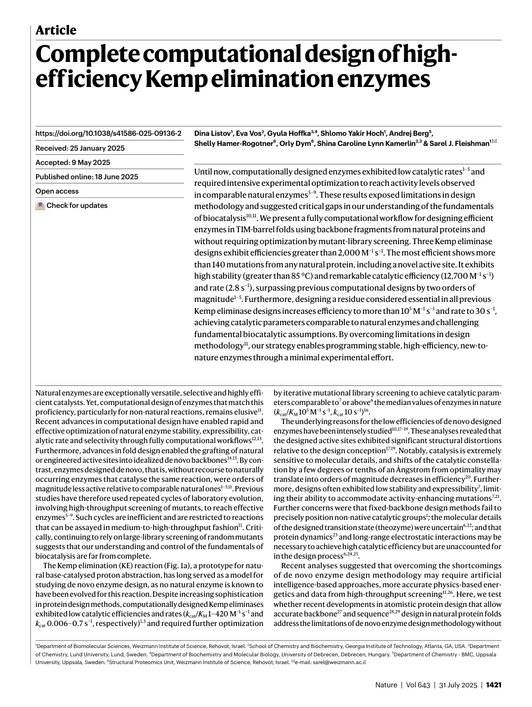
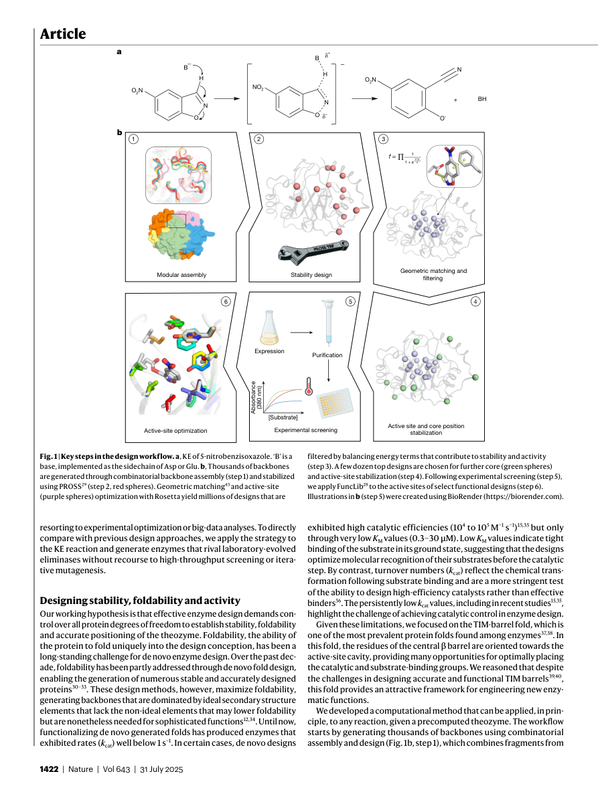
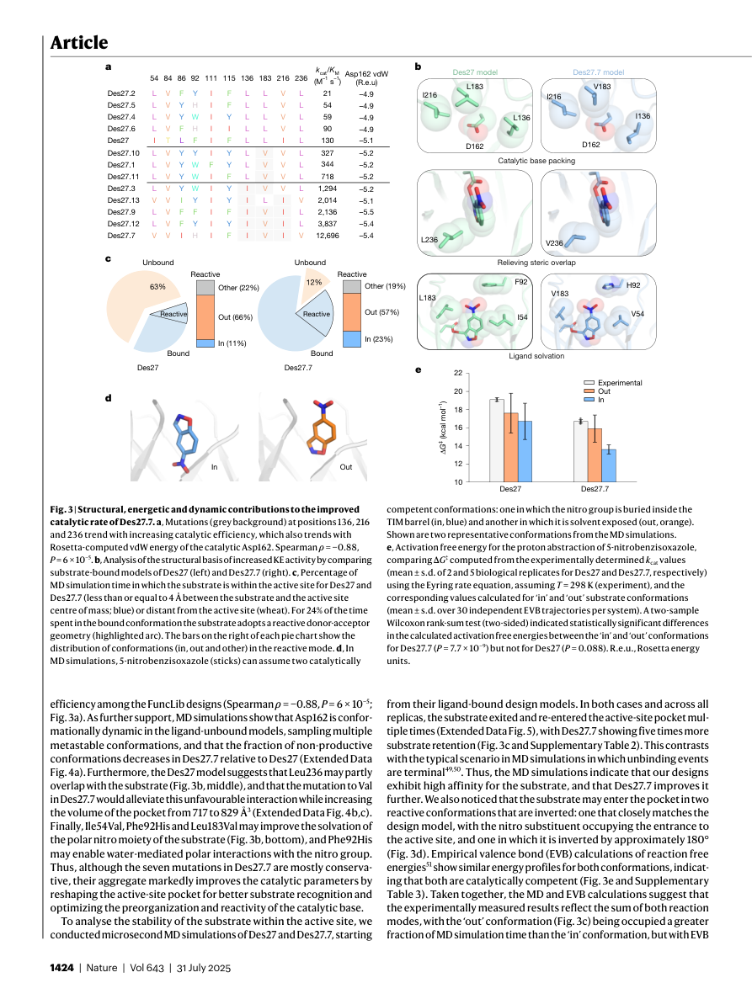
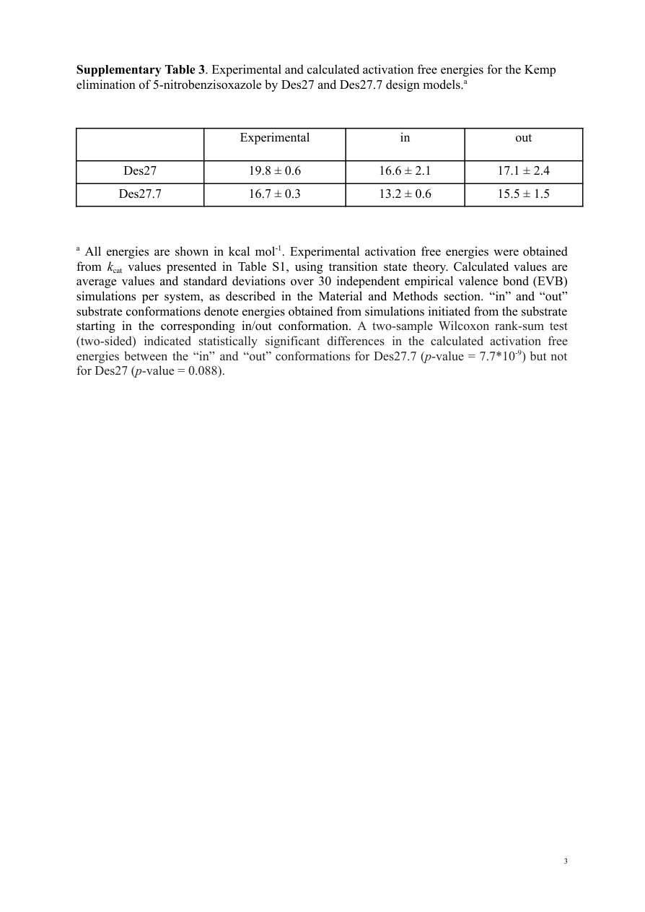
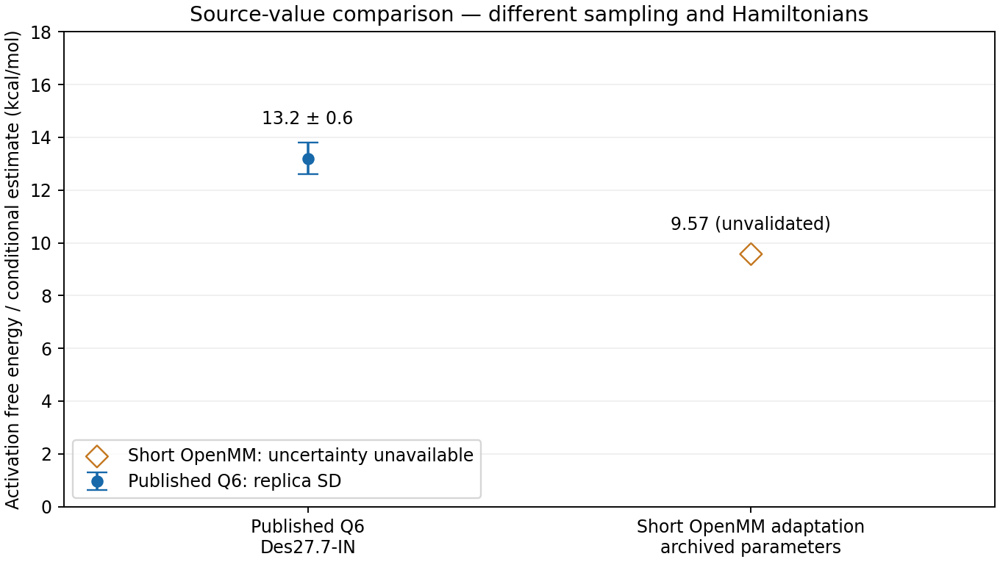

What did the paper study?
Listov and colleagues reported computationally designed enzymes for the Kemp elimination reaction. We use Des27.7-IN as our worked example. It is a different enzyme and reaction from MHETase.
In this enzyme, Asp162 takes a proton from 5-nitrobenzisoxazole. As that C–H bond breaks, the ring opens when its N–O bond breaks. The products are a nitrile/phenoxide species and protonated Asp. EVB lets us model this change by connecting reactant and product bonding descriptions.
For Des27.7-IN, Supplementary Table 3 gives a computed activation barrier of 13.2 ± 0.6 kcal/mol (the standard deviation across replicas). The paper’s experimental kcat-based apparent barrier is a different quantity, so we keep the two comparisons separate.
Read the paper ↗ · Supporting information ↗ · Deposited simulation inputs ↗

How the reaction changes the molecule
The labels below are checked against the Des27.7-IN structure and the numerical FEP atom map. The substrate is SUB257, and the catalytic residue is ASP162. A few comments in the archived FEP files use older residue numbers or Glu-like atom labels. For this workshop, use the atom map and the ASP162 names shown here.
Proton donor meets base
CH–HT and OR–NR are bonded. Asp162 is a carboxylate: OD1 is the model's proton acceptor. The substrate is neutral and Asp carries formal charge −1.
Abstraction and ring opening
Asp OD1 accepts HT as the CH–HT bond breaks. Electron redistribution increases CH–NR bond order toward a nitrile while the NR–OR bond breaks and negative charge develops on OR. These are coupled changes in the two-state model, not a sequence of separately simulated intermediates.
Nitrile / phenoxide + AspH
OD1–HT is bonded; CH–HT and OR–NR are absent. CH–NR has nitrile-like parameters. OR stays attached to the aromatic framework as phenoxide. Asp is neutral; the substrate product has formal charge −1, so total reactive charge remains −1.
Which bonds and parameters change?
| Atom pair (PDB serials) | Reactant → product |
|---|---|
| CH–HT (4002–4014) | Bond present → absent: C–H cleavage. |
| OR–NR (4005–4006) | Bond present → absent: N–O ring opening. |
| OD1–HT (2526–4014) | Bond absent → present: Asp O–H formation. |
| CH–NR (4002–4006) | Bond retained with changed force constant / equilibrium distance: 1.320 → 1.157 Å (model parameters, not measured trajectory distances). |
| CH–CB2; CG–OD1; CG–OD2 | Bond parameters change with conjugation and Asp protonation. Angles, torsions, impropers, charges, types and exclusions also change. |
EVB does not track individual electrons. It combines the reactant and product energy descriptions as the atoms move. This two-state model does not include a separate carbanion intermediate; the changing product-state contribution is a mathematical mixture, not a new chemical species.
All 22 mapped reactive atoms
Q index is a local reactive-region index; PDB serial is the global atom identifier. Neither is a residue number. Atom names such as CH and CA are distinct from force-field type labels such as sub_CA or pro_CA. OpenMM array indices are zero-based; the source serial mapping is one-based.
| Q index | PDB serial | Actual identity | Chemical role |
|---|---|---|---|
| 1 | 4002 | SUB257.CH | Substrate carbon bearing HT; becomes the nitrile carbon. CH is one atom name, not a carbon–hydrogen pair. |
| 2 | 4003 | SUB257.CB2 | Aromatic framework carbon bonded to CH; its bond parameters to CH change. |
| 3 | 4004 | SUB257.CA | Aromatic framework carbon bonded to the ring oxygen OR. |
| 4 | 4005 | SUB257.OR | Heterocycle oxygen; loses its bond to NR and remains attached to the aromatic ring as phenoxide oxygen. |
| 5 | 4006 | SUB257.NR | Heterocycle nitrogen; remains bonded to CH and becomes the nitrile nitrogen. |
| 6 | 4007 | SUB257.CB1 | Aromatic framework carbon. |
| 7 | 4008 | SUB257.CC1 | Aromatic framework carbon. |
| 8 | 4009 | SUB257.CZ | Aromatic framework carbon. |
| 9 | 4010 | SUB257.CC2 | Aromatic framework carbon. |
| 10 | 4011 | SUB257.NO | Nitro-group nitrogen; distinct from the reactive ring nitrogen NR. |
| 11 | 4012 | SUB257.ON1 | Nitro-group oxygen; distinct from the ring oxygen OR. |
| 12 | 4013 | SUB257.ON2 | Second nitro-group oxygen. |
| 13 | 4014 | SUB257.HT | Transferred hydrogen: moves from CH to Asp162 OD1. |
| 14 | 4015 | SUB257.HB1 | Non-transferred substrate ring hydrogen. |
| 15 | 4016 | SUB257.HC1 | Non-transferred substrate ring hydrogen. |
| 16 | 4017 | SUB257.HC2 | Non-transferred substrate ring hydrogen. |
| 17 | 2522 | ASP162.CB | Asp side-chain beta carbon. |
| 18 | 2523 | ASP162.HB2 | Asp beta-carbon hydrogen. |
| 19 | 2524 | ASP162.HB3 | Second Asp beta-carbon hydrogen. |
| 20 | 2525 | ASP162.CG | Asp carboxyl carbon; remains bonded to both oxygens. |
| 21 | 2526 | ASP162.OD1 | Asp carboxylate oxygen accepting HT; becomes the hydroxyl oxygen. |
| 22 | 2527 | ASP162.OD2 | Other Asp carboxylate oxygen; acquires carbonyl-like product parameters. |
Which coordinates can I inspect in a trajectory?
Track r(CH–HT), r(OD1–HT), r(OR–NR) and r(CH–NR). A useful geometric proton-transfer coordinate is r(CH–HT) − r(OD1–HT): negative favours donor attachment, positive acceptor attachment. It is a different coordinate from the energy-gap axis. A short mapping trajectory or a binned energy-gap maximum alone does not establish the molecular transition state.
How does EVB work?
EVB uses two force-field descriptions of the same atoms: one has reactant bonding, the other product bonding. These are called diabatic states. At each molecular geometry, the EVB calculation combines their energies. Q6 and OpenMM can both do this, but using the same equation does not make their simulations identical.
[H12, VP(x) + α]]
State energies
VR and VP are the reactant and product energies evaluated at the same atomic coordinates. α shifts the product state up or down relative to the reactant.
State mixing
H12 controls how strongly the two states mix. Their coupling creates the lower EVB energy surface used for the reaction. Neither H12 nor α is itself the activation barrier.
Ensemble free energy
During mapping dynamics, λ gradually changes the balance between the two force-field states. FEP combines information from the λ windows, and EVB mixing/reweighting gives the free-energy profile. A scan of a few fixed geometries is not, by itself, a free-energy barrier.
Preparation, relaxation and FEP
The supplied Q files define the starting chemistry and give us a reference workflow. We translated that setup for OpenMM and ran a much shorter test. The two calculations use different Hamiltonians and sampling lengths, so the OpenMM test is an adaptation, not a direct reproduction of Q6.
| Stage | Published Q6 route / supplied inputs | This OpenMM adaptation |
|---|---|---|
| 1 · Prepare | Native topology, PDB coordinates, OPLS-AA/TIP3P parameters and a Q FEP definition describe the enzyme/solvent and two reactive states. | Parse Des27.7-IN topology, coordinates and FEP changes. Preserve atom order; build R/P state systems for 6,330 particles and map the 22 reactive atoms. Convert units, LJ coefficients and Morse conventions. Normalize residue naming for OpenMM without changing particle identity. |
| 2 · Define the FEP model | The .fep file lists Q atoms, state-dependent charges, bonds, angles, torsions, impropers and exclusions. It is a model definition, not an energy trajectory. | Apply those changes to two prebuilt state systems; register reactive Morse terms and the atom mapping in EVBOpenMM. Verify detected forming/breaking pairs against the source. Use λRVR+(1−λR)VP for mapping sampling. |
| 3 · Relax | Supplied Q templates include water minimization/equilibration and system minimization, followed by staged warming and equilibration. Some archive templates are empty; a complete executable native sequence is not claimed here. | Hold the reactant mapping state (λR=1). Use bounded force-descent steps with line search, then optional limited L-BFGS minimization. Record energy/force diagnostics. The short config allows 200 descent iterations, 200 L-BFGS iterations and 0.0005 nm maximum descent displacement. |
| 4 · Heat and equilibrate | Published protocol: 30 ns equilibration per replica, before the production mapping calculations. Consult the SI for the original setup. | Short example: 50 → 150 → 300 K, 200 steps per temperature, then 1,000 steps at 300 K. Langevin dynamics uses a 0.25 fs timestep and friction 1 ps⁻¹. This is an engineering trial, not equivalent to 30 ns equilibration. |
| 5 · Sample windows | Qdyn mapping dynamics: 51 windows × 200 ps, with 30 independent replicas per case. Native .en files contain energies for QFEP analysis. | Short example: one seed (101), 21 windows from λR=1 to 0; each has 200 equilibration and 1,000 production steps. Record both state energies every 20 production steps (50 samples/window). Save DCD, energy traces and restart/checkpoint data. |
| 6 · Reconstruct | QFEP connects window free energies and evaluates the EVB profile using coupling/offset parameters, binning and reweighting. | Connect windows with forward/reverse FEP diagnostics. Mix EVB energies per frame before exponential bin averaging and cumulative window normalization. Inspect overlap and missing bins; a smooth plot alone does not establish convergence. |
Where can I find the code and run settings?
Kemp_EVB/scripts/full_enzyme.py builds the imported states. full_workflow.py handles relaxation, heating, mapping and checkpoints. source_profile.py reconstructs the source-parameter profile.
To change the short run, edit Kemp_EVB/configs/full_enzyme_short.json. The main settings are equilibration steps, steps per FEP window, the λ schedule, sampling interval and random seed. Save each changed run to a new directory so the results remain easy to compare. Longer runs help with sampling, but length alone does not validate the model.
What carries over from Q6, and what changes?
Retained chemistry
Mapped R/P atoms, reactive topology changes and native reactive coefficients. The related archived QFEP input gives H12=100.4 and native α=−110 kcal/mol.
Changed environment
The Q calculation uses a SCAAS sphere and a local reaction field. Our OpenMM version uses a finite water droplet, a water wall, fixed outer protein and direct nonperiodic electrostatics. This changes the electrostatic boundary; it is not the same as Q’s LRF treatment.
Changed conventions and software
The source files use kcal/mol and ångströms; OpenMM uses kJ/mol and nanometres. We converted the units and applied a +44.5 kcal/mol Morse zero shift to P, for a total offset of −65.5 kcal/mol. OpenMM/EVBOpenMM runs the dynamics, and Python scripts analyze the profile instead of Qdyn and native QFEP.
How to read this result: the OpenMM workflow runs, but it is not an exact reproduction of Q6. The short saved dataset gives a rough barrier of about 9.57 kcal/mol with the source parameters. Adjusting coupling or offsets to reach 13.2 is an exercise in parameter effects; it does not validate a prediction.
Paper figures and our comparison
These are complete, unaltered pages from the paper and its supporting information. Open an image to read it at full size. Our notes and OpenMM comparison are presented separately below.
Article introduction, PDF page 1

Open full page ↗
Figure 1: mechanism and design workflow, PDF page 2

Open full page ↗
Figure 3 and results discussion, PDF page 4

Open full page ↗
Supplementary Table 3, PDF page 3

Open full page ↗
Listov et al., Nature (2025), article and associated SI. © The Author(s) 2025, modified publication 2025. CC BY-NC-ND 4.0; noncommercial teaching reproductions, no content alterations. Third-party credits remain on the source pages. Attribution and provenance.
How does the short OpenMM result compare?
| Case | Experiment: apparent barrier | Published Q6 IN | Published Q6 OUT | Our short OpenMM IN |
|---|---|---|---|---|
| Des27 | 19.8 ± 0.6 | 16.6 ± 2.1 | 17.1 ± 2.4 | Not calculated here |
| Des27.7 | 16.7 ± 0.3 | 13.2 ± 0.6 | 15.5 ± 1.5 | 9.57, unvalidated; uncertainty unavailable |
All values are kcal/mol. Published numbers come from Supplementary Table 3; IN/OUT identify the substrate starting conformations used for the simulations, as defined in the SI. Experimental uncertainties and computed replica standard deviations must not be treated as identical statistical quantities.

Conclusion: we have not reproduced the published barrier. Our archived-parameter OpenMM estimate is 3.63 kcal/mol lower than the published Q6 IN mean (about 27.5%). There is no OpenMM independent-replica uncertainty or established convergence, and the electrostatic boundary differs. We have not executed an independent native Q6 reproduction. A workshop curve tuned to 13.2 is a target match, so it cannot count as independent agreement.
In the paper, Figure 1 shows the mechanism and design workflow, while Figure 3 discusses active-site preorganization and supporting structural evidence. Our short OpenMM calculation does not reproduce those experiments. The paper’s deposited input files are linked above and remain separate from our OpenMM files.
Try the 30-minute hands-on session
1 · Understand the states
Start with the mapped reaction, then see how EVB combines the reactant and product states in a small five-atom example.
Open the interactive core ↗2 · Look at the saved profile
See what the original parameter file says, then compare it with the short OpenMM reconstruction.
Open the saved profile ↗3 · Try different EVB settings
Compare 25 coupling/offset pairs and five target matches. Watch how both the barrier and reaction free energy change.
Open the workshop scan ↗4 · Read the plot carefully
Grey shows the archived baseline, blue your selected pair and red the chosen target. The diamond marks the largest sampled bin. The display shifts the curve so that this point sits at zero; the underlying values are unchanged.
View the coordinate explanation ↗If you want to rerun the exercises
Setup is optional. If you want to recompute the examples, follow guides/SETUP.md, open a terminal in this workshop folder and run python run_practical.py --step core, followed by --step profile and --step scan. Otherwise, use the saved data; you do not need to run full-enzyme MD during the session.
Participant handout ↗ · Presentation PDF ↗ · Instructor guide · Dataset provenance
Articles, supporting information and data
Des27 design and simulations
Listov et al., Nature (2025). The main article explains the designed catalysts; the SI describes simulation methods and reports barriers. Zenodo supplies the native starting inputs.
Related GNCA protocol
Gutierrez-Rus et al., JACS (2025), “Enzyme Enhancement Through Computational Stability Design Targeting NMR-Determined Catalytic Hotspots”. The related Kemp_variants archive supplies qfep.inp; its GNCA scaffold is distinct from Des27.
Q6 source ↗ · EVBOpenMM ↗ · OpenMM documentation ↗ · Design code ↗